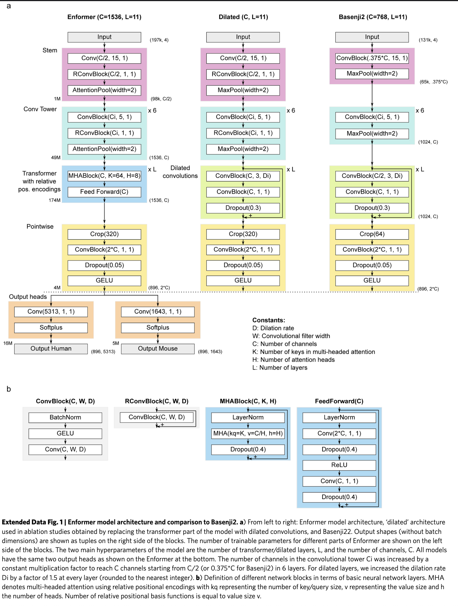

GENE 46100 — Unit 02
2026-05-05
Input: 196,608 bp of DNA sequence (one-hot encoded)
Output: Predicted signal at 896 genomic bins for:
Architecture: CNN stem → convolutional tower → transformer → prediction heads
Key innovation: Transformer attention captures enhancer–promoter interactions across the full 200 kb window.
Input (B, 196608, 4)
↓
[1] Stem Conv1d + residual + softmax pool → (B, 768, 98304)
↓
[2] Conv Tower 6 stages, expanding channels → (B, 1536, 1536)
↓
[3] Transformer 11 layers, relative attention → (B, 1536, 1536)
↓
[4] Crop + Pointwise center crop + expand dim → (B, 896, 3072)
↓
[5] Prediction Heads per-species linear + Softplus → (B, 896, 5313)Total sequence compression: 128× (196,608 → 1,536 positions before crop)

Three building blocks appear throughout:
ConvBlock(C, k)
BatchNorm1d
↓
GELU
↓
Conv1d(C, kernel=k, padding=same)RConvBlock(C, k)
x + ConvBlock(C, k) ← residualSoftmaxPool(n)
For each window of n adjacent positions, learn a per-channel attention weight and take the weighted sum.
Better than max pooling (keeps information from both positions) and average pooling (can focus).
Halves sequence length.
Input (B, 196608, 4)
↓ Rearrange → (B, 4, 196608)
↓ Conv1d(4→768, kernel=15)
↓ RConvBlock(768, kernel=1)
↓ SoftmaxPool(2)
Output (B, 768, 98304)Design choices:
Six identical-structure stages:
ConvBlock(Cᵢ→Cᵢ₊₁, kernel=5) ← no residual
↓
RConvBlock(Cᵢ₊₁, kernel=1) ← with residual
↓
SoftmaxPool(2) ← halve lengthChannel progression (geometric, rounded to 128):
768 → 896 → 1024 → 1152 → 1280 → 1536
After stem + 6 stages:
| Stage | Channels | Sequence |
|---|---|---|
| Stem out | 768 | 98,304 |
| Stage 1 | 768 | 49,152 |
| Stage 2 | 896 | 24,576 |
| Stage 3 | 1024 | 12,288 |
| Stage 4 | 1152 | 6,144 |
| Stage 5 | 1280 | 3,072 |
| Stage 6 | 1536 | 1,536 |
Local → abstract hierarchy:
Each pooling step doubles the genomic span each unit sees.
By stage 6, each of the 1,536 positions represents 128 bp of original sequence.
Why geometric channel growth?
channels ∝ base^stage
Constant ratio between stages — a principled inductive bias that larger feature spaces are needed as representations become more abstract.
Why no residual on the k=5 conv?
Channel dimensions change between stages (in ≠ out), so a skip connection isn’t possible there.
11 layers. Input rearranged to (B, 1536 positions, 1536 dim).
Each layer:
LayerNorm
→ MultiHeadAttention (8 heads)
→ Dropout(0.4)
[+ residual]
LayerNorm
→ Linear(1536→3072) → Dropout(0.4) → ReLU
→ Linear(3072→1536) → Dropout(0.4)
[+ residual]Attention dimensions:
| Heads | 8 |
| Key dim | 64 per head |
| Value dim | 192 per head |
Key/query dim (64) < value dim (192): keys determine where to attend; values carry what to mix.
Output projection is zero-initialized → each layer starts as identity.
Why not absolute position?
An enhancer 50 kb upstream has the same effect regardless of where in the genome it sits. What matters is relative distance between positions.
The attention logit for position \(i\) attending to \(j\):
\[\text{logit}(i,j) = \underbrace{(q_i + b_c) \cdot k_j}_{\text{content}} + \underbrace{(q_i + b_p) \cdot r_{j-i}}_{\text{position}}\]
\(r_{j-i}\) is a learned encoding of the distance \(j-i\).
Three basis functions encode \(r_{j-i}\):
Exponential decay
Nearby positions matter more. 64 scales from fine to coarse.
Central mask
Step functions: “within k positions?” Binary windows of increasing width.
Gamma PDF
Peaked functions. Can encode “matters most at distance X.”
Together: rich vocabulary of distance relationships, learned from data.
At 1,536 positions × 128 bp/position: attention between positions 0 and 1,535 spans the full 196,608 bp window — capturing enhancer–promoter interactions impossible for the CNN alone.
Center crop: 1,536 → 896 positions
Remove 320 positions from each endEdge positions have asymmetric context — they can’t “see” past the sequence boundary. The central 896 positions have full, symmetric context on both sides.
In genomic coordinates: 896 × 128 bp = 114,688 bp of predictions from a 196,608 bp input.
Pointwise projection: 1,536 → 3,072
Linear(1536→3072)
→ Dropout(0.05)
→ GELUExpands the shared representation before species-specific heads. Lower dropout (0.05 vs 0.4) — we’re close to the output.
Human head:
Linear(3072→5,313) → Softplus
Mouse head:
Linear(3072→1,643) → SoftplusApplied independently at each of the 896 positions.
The trunk is fully shared between species. Only the final linear layers differ.
Why Softplus?
Epigenomic signals are non-negative counts.
Why train on two species?
Joint training forces the trunk to learn conserved regulatory grammar. Features that matter in both human and mouse are more likely to be biologically real.
| Stage | Output shape |
|---|---|
| Input | (B, 196608, 4) |
| Stem | (B, 768, 98304) |
| Conv Tower | (B, 1536, 1536) |
| Transformer | (B, 1536, 1536) |
| Center crop | (B, 896, 1536) |
| Pointwise | (B, 896, 3072) |
| Human head | (B, 896, 5313) |
What are we predicting?
Epigenomic tracks are read counts from sequencing:
Count data is naturally modeled as Poisson distributed.
Poisson distribution:
\[P(y \mid \lambda) = \frac{e^{-\lambda} \lambda^y}{y!}\]
Poisson NLL loss:
\[\mathcal{L} = \lambda - y \log \lambda + \text{const}\]
Penalizes overestimating sparse tracks heavily. Scales naturally with signal magnitude.
Rule of thumb: when targets are non-negative counts with variance ≈ mean, use Poisson NLL. MSE would underweight high-count bins and treat all errors equally regardless of scale.
Human: 5,313 tracks
Sources: ENCODE, Roadmap Epigenomics, GEO
Mouse: 1,643 tracks
Same assay types, profiled in mouse tissues.
Data format:
What: randomly shift the input sequence by ±1–4 bp, re-center the prediction window.
Original: [----196,608 bp----]
↓ predict
[------896 bins-----]
Shifted+3: [---196,608 bp---]
↓ predict
[----896 bins----]Why:
What: flip the sequence strand.
Forward: 5'–ACGT...ACGT–3'
Reverse complement:
3'–TGCA...TGCA–5'
↕ reverse ↕
5'–ACGT...TGCA–3'Applied by: 1. Reversing the sequence order 2. Swapping A↔︎T and C↔︎G (complement)
Why:
Both augmentations exploit known biological symmetries. The model doesn’t need to learn “this motif on the + strand is different from the same motif on the − strand” — that’s baked in.
Architecture:
Training:
GENE 46100 · Deep Learning in Genomics